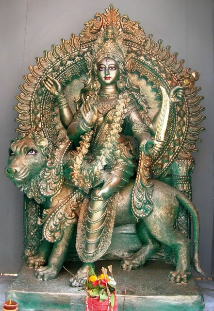

|
|||||
lordess sakthi
NAVA DURGA
KATYAYANI
|
 |
|
Mother Durga
is famous in her sixth form by the name of Katyayani . Face
salt was a noted sage, his son Katy 's and these Katy famous
sage of the tribe of Katyayana born. In order to get Goddess
Durga in the form of daughter, he had austerities for many
years, and according to the wishes of the sage, Durgamasur
Sanjharna mother Durga was born here as a daughter and
KatyayaniBecame famous by name. The goddess Ardh Chandra,
wearing the head on the head, is decorated with various
types of ornaments or ornaments and is made up of four arms;
From their right sides, the Goddess Mother is displaying the
mother and Abhay mudra and in the left arms, they wear Padma
flowers and sword. Lion! Goddess is the vehicle of Mother,
Goddess Katyayani is on the lion. |